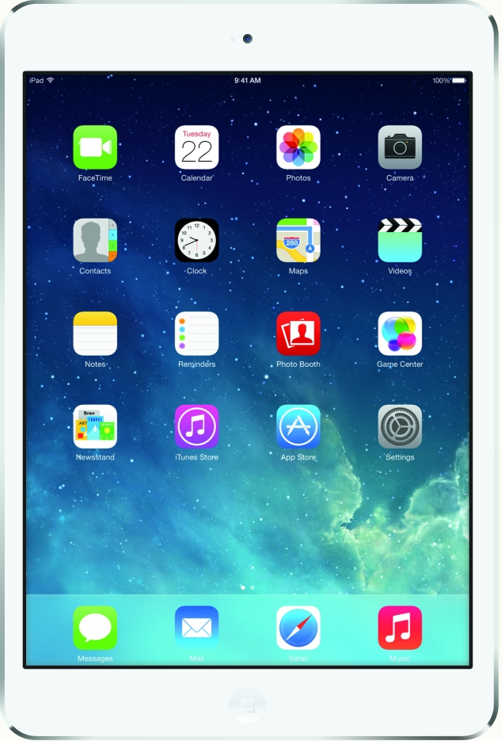

Первый месяц – бесплатно!
Попробуйте
В отличие от наших конкурентов, у нас отсутствует строгая привязка аккаунта к проекту.
Вы платите только за то, что вам реально нужно. 30-дневный trial прилагается.
Выбирайте модуль
